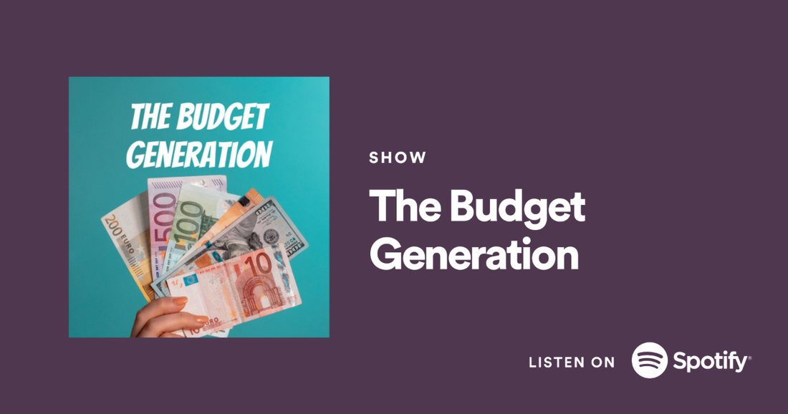

The Budget
Generation
Personal finance for people in their twenties, made as scripted audio rather than a conversation about money.
Released
The first thing JoyTown finished.
Five episodes, written, produced, edited and narrated in-house, four years before the company made a film.
Most money podcasts are two people talking. This one was scripted: each episode written as a piece, then built in the edit with a call-in hotline, guest interviews and sound design, so that a subject people avoid became something you would actually listen to for half an hour.
It matters here for a practical reason. The habits the show was made with, writing first, scheduling properly, finishing what was started, are the same ones Overthinking It was produced on.
- Format
- Scripted audio, five episodes
- Year
- 2020 to 2021
- Written by
- Ayo Hana
- Produced by
- Ayo Hana
- Narrated by
- Ayo Hana
- Banner
- JoyTown Productions

Listen
The series is available on streaming. A direct link is added here when the archive page is live.